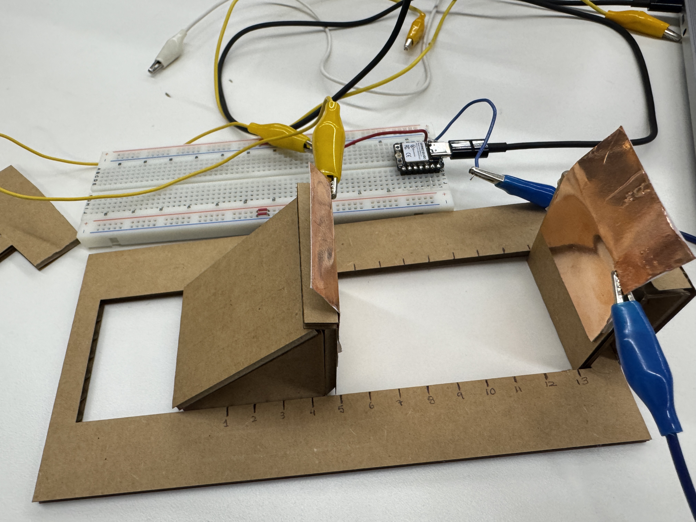
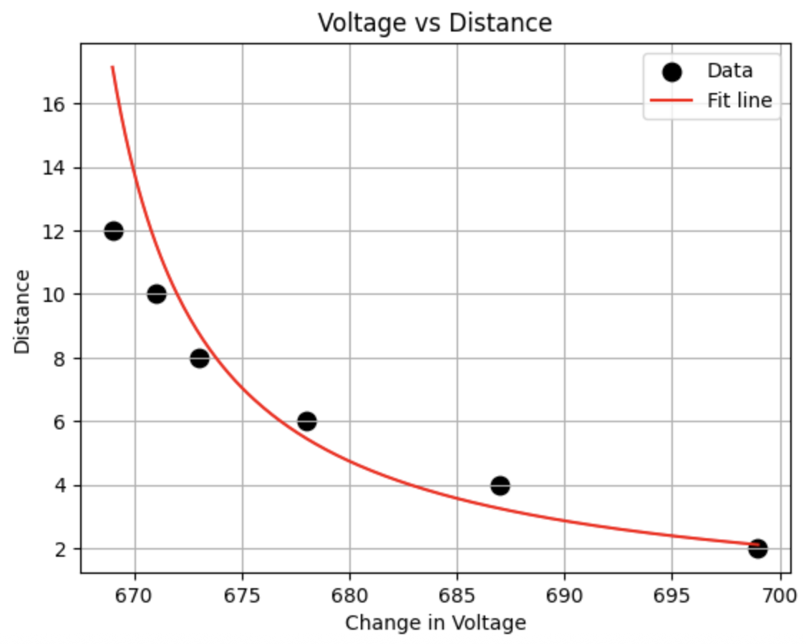
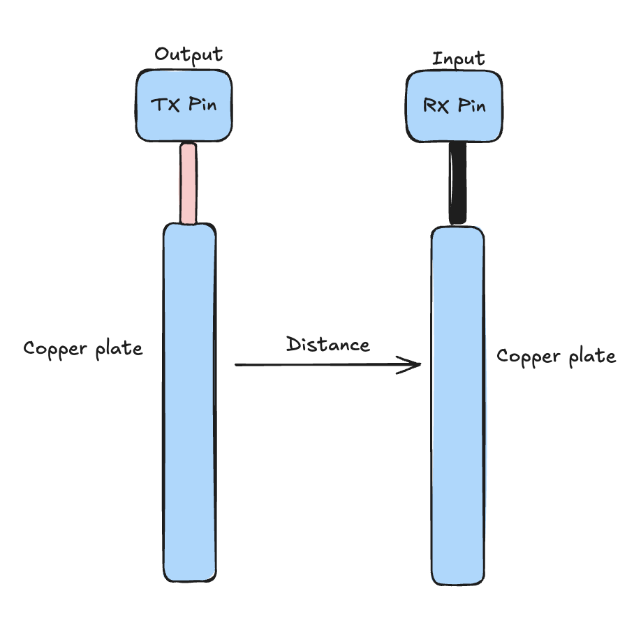
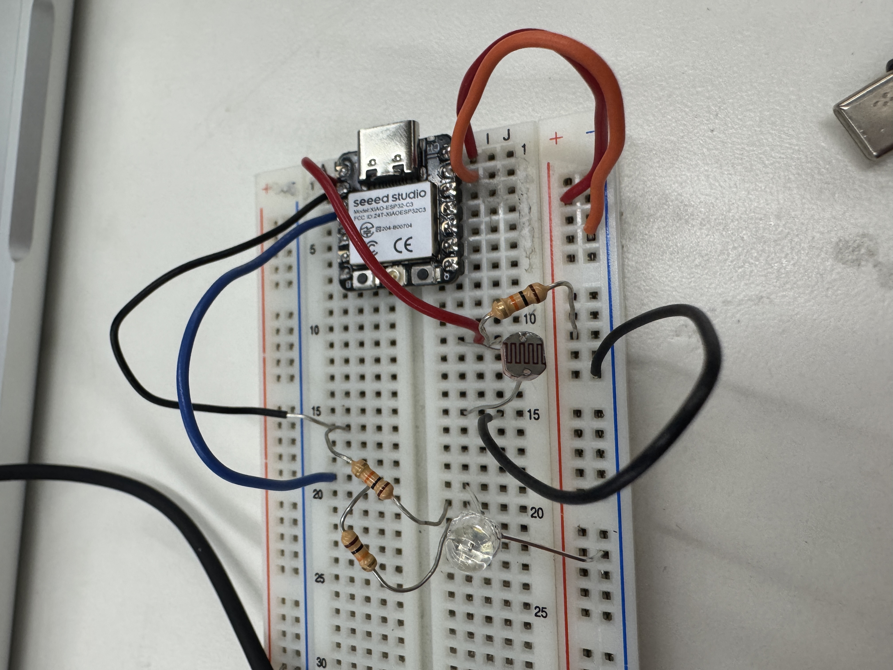
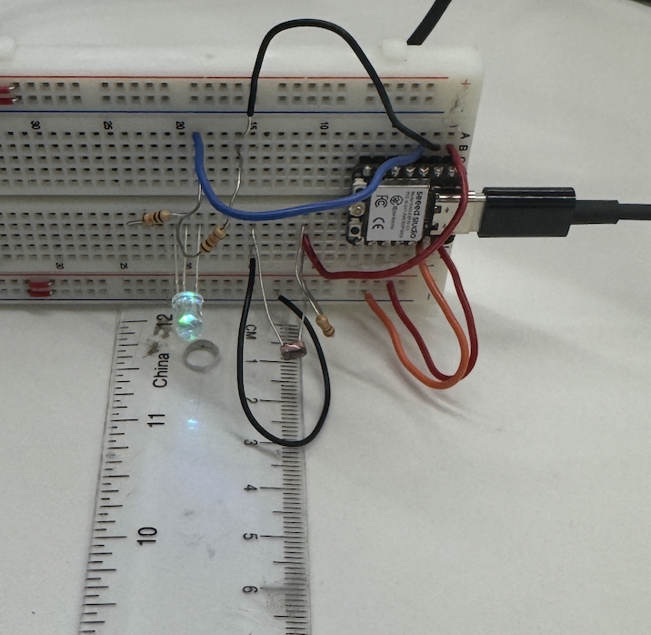
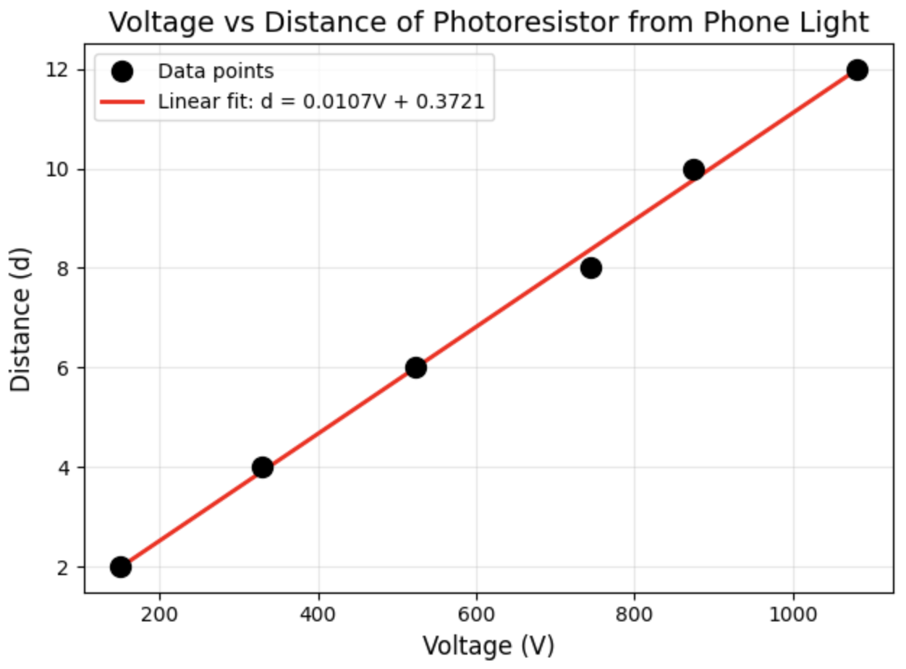
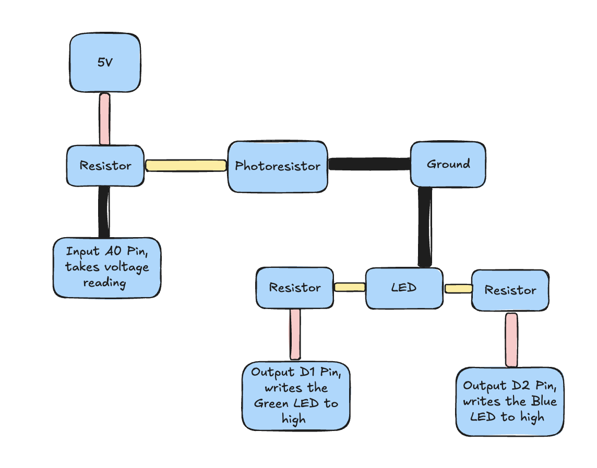
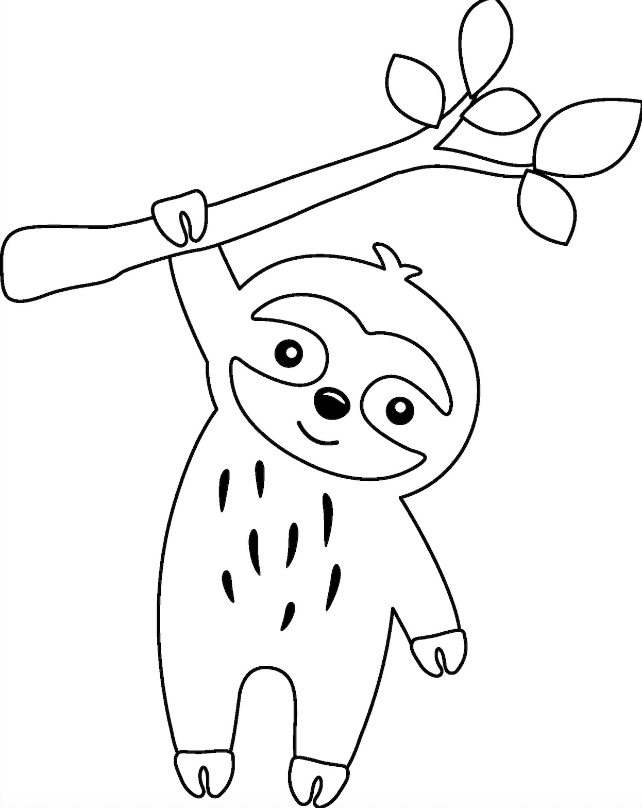
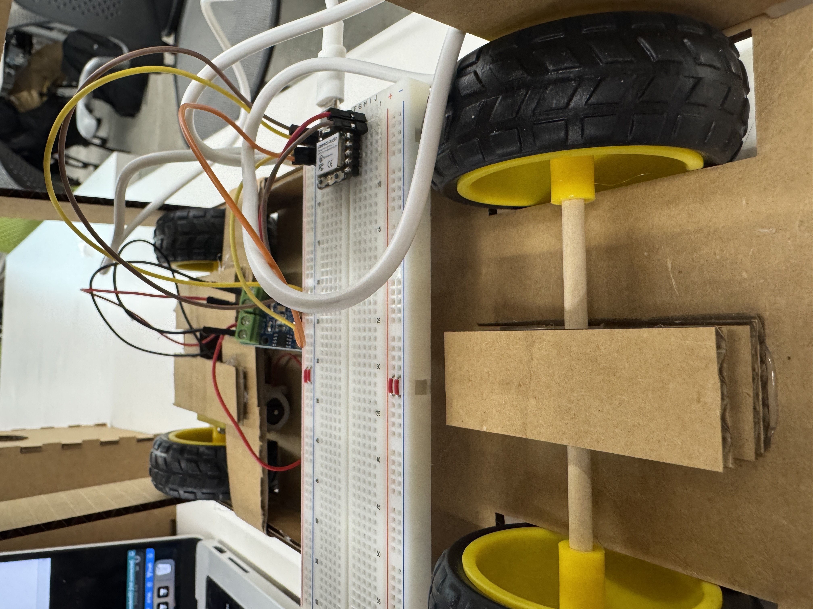
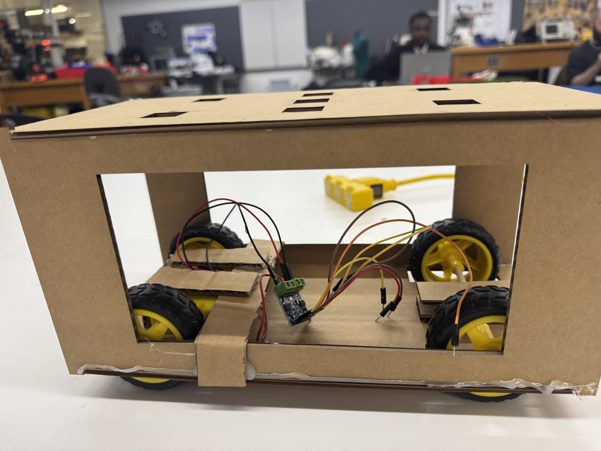

<div class="textcontainer">
<p class="margin"> </p>
<h3>Week 6: Electronic Inputs</h3>
<a href='./graphs_week6.ipynb' download > Download my python code to create the graphs from the taken measurements for assignments 1 and 2</a> <br>
<h4>Assignment 1: Capactive Sensor</h4>
I made a capacitive sensor to model the relationship between voltage and distance.<br>
Here is it:<br>
<p></p> <br>
Then, I used the measures that I added to the side to move my plate different amounts of centimeters
in distance away from the plate, and took measurements using arduino.<br>
<a href='./capacitive_sensor.ino' download > Download my arduino code </a> <br>
Next, I made a graph using the readings from my capacitive sensor to model the
relationship between the voltage readings I was getting and the distance away
the capacitors were from each other. <br>
Here is the graph: <br>
<p></p> <br>
If you take the voltage, subtract 665, and then do 72/that value, you can get
a measure for distance. This makes sense physically, because the capacitance of
the plate is inversely proportional to distance.
Here are the schematics of the capacitor: <br>
<p></p> <br>
<h4>Assignment 2: Photoresistor with an LED output</h4>
I made a photoresistor with an LED that blinks green, but! When you shine your
phone flashlight on the photoresistor, also shows the color blue
Here it is: <br>
<p></p> <br>
<video controls style="width: 200%; flex-shrink: 0; max-width: 400px;">
<source src="./photoresistor.mp4" type="video/mp4">
Your browser does not support the video tag. <a href="./photoresistor.mp4">Download the video</a> instead.
</video>
<br>
Then, I measured the distance of my phone light to the photoresistor to get a measure
for the relationship between the voltage on the reader and the distance from the light.
<br>
<p></p> <br>
<a href='./photoresistor.ino' download > Download my arduino code </a> <br>
Next, I made a graph using the readings from my sensor to model the
relationship between the voltage readings I was getting and the distance away
from the flashlight. <br>
Here is the graph: <br>
<p></p> <br>
We can see what the linear relationship is between these values by the line of
best fit in the graph. This makes sense because as resistance gets lower (so distance
is higher), voltage gets higher since voltage is directly proprotional to resistance
under constant current.
Here are the schematics of the photoresistor: <br>
<p></p> <br>
<h4>Assignment 3: Prepare CAD Files for CNC Week</h4>
For CNC week, I will create a sloth hanging on a branch. I will have different
heights for different layers of the face and the branch. Also, the eyes and nose
will be a layer above, so overall four layers.
Here is the image that I have the CAD for. <br>
<p></p> <br>
And you can download the dxf file here. <br>
<a href='./cute_sloth_cnc.dxf' download > Sloth DXF </a> <br>
<h4>Final Project Progress</h4>
This week, I made a car that is controlled by two motors. I learned a lot about
getting the car to stay up/fixing the motors onto my materials. I used a hinge
made out of cardboard to screw the motors in, but then ended up needing much more
support to make sure the motors stayed still. Next week, I will be recreating this
car out of wood so it is more stable, especially with the motors. I will CAD files
for the hinge and 3D print them. I spoke to Bobby about my final project, and he
advised me that I should use different wheels that pair with stepper motors so that
I can get more precise and consistent movement for my car. I will also edit the
design to make the car as thin as possible while also fitting all the motors.
Here is a couple pictures and video of my final car movement.<br>
<p></p> <br>
<p></p> <br>
<video controls style="width: 200%; flex-shrink: 0; max-width: 400px;">
<source src="./car_moving.mp4" type="video/mp4">
Your browser does not support the video tag. <a href="./car_moving.mp4">Download the video</a> instead.
</video>
</div>